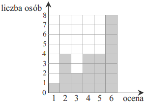

Zestaw treningowy 1
Punkty \(A=(1,-2)\), \(C=(4,2)\) są dwoma wierzchołkami trójkąta równobocznego
\(ABC\). Wysokość tego trójkąta jest równa
A.\( \frac{5\sqrt{3}}{2} \)
B.\( \frac{5\sqrt{3}}{3} \)
C.\( \frac{5\sqrt{3}}{6} \)
D.\( \frac{5\sqrt{3}}{9} \)
A
Punkty \(A=(-3,-1)\), \(B=(2,5)\) są dwoma wierzchołkami trójkąta równobocznego
\(ABC\). Pole tego trójkąta jest równe
A.\( \frac{\sqrt{183}}{2} \)
B.\( \frac{61\sqrt{3}}{2} \)
C.\( \frac{61\sqrt{3}}{4} \)
D.\( \frac{11\sqrt{3}}{4} \)
C
Punkty \(B=(0,0)\), \(C=(3,0)\) są dwoma wierzchołkami trójkąta równobocznego
\(ABC\). Obwód tego trójkąta jest równy
A.\( 3 \)
B.\( 9 \)
C.\( \frac{3\sqrt{3}}{2} \)
D.\( \frac{9\sqrt{3}}{4} \)
B
Wskaż nierówność która opisuje przedział zaznaczony na osi liczbowej
A.\( |x+2|\le 3 \)
B.\( |x-2|\le 3 \)
C.\( |x-3|\le 2 \)
D.\( |x+3|\le 2 \)
A
Zaznacz na osi liczbowej punkty opisane równością \(|x +
1|=4\).
Zaznacz na osi liczbowej przedział opisany nierównością \(|x +
1| \le 4\).
Drut o długości \(27\) metrów pocięto na trzy części, których stosunek długości
jest równy \(2:3:4\). Jaką długość ma najkrótsza z tych części?
A.\( 4{,}5 \) m
B.\( 6 \) m
C.\( 6{,}75 \) m
D.\( 9 \) m
B
Trzy kamienie ważą łącznie \(26\) kg. Stosunek ich wag jest równy \(1:5:7\). Ile
waży najcięższy z kamieni?
A.\( 10 \) kg
B.\( 12 \) kg
C.\( 13 \) kg
D.\( 14 \) kg
D
Kasia kupiła w sklepie \(4\) bluzki. Stosunek ich cen jest równy \(2:3:6:15\). Jaka
jest różnica w cenie między najdroższą a najtańszą bluzką, jeżeli wiadomo, że wszystkie
kosztowały łącznie \(390\) zł?
A.\( 13 \) zł
B.\( 130 \) zł
C.\( 195 \) zł
D.\( 255 \) zł
C
Ile punktów wspólnych ma prosta o równaniu \(y=-x+2\) z
okręgiem o środku w początku układu współrzędnych i promieniu \(2\)?
A.\( 0 \)
B.\( 1 \)
C.\( 2 \)
D.\( 3 \)
C
Ile punktów wspólnych ma prosta o równaniu \(y = 3\) z
okręgiem o środku w punkcie \(S(1, 2)\) i promieniu \(1\)?
A.\( 0 \)
B.\( 1 \)
C.\( 2 \)
D.\( 3 \)
B
Ile punktów wspólnych ma prosta o równaniu \(y=2x+1\) z
okręgiem o środku w punkcie \(S=(2, -2)\) i promieniu \(1\)?
A.\( 0 \)
B.\( 1 \)
C.\( 2 \)
D.\( 3 \)
A
Liczby: \(1, 3, x-11\) w podanej kolejności są pierwszym, drugim i trzecim wyrazem
ciągu arytmetycznego. Liczba \(x\) jest równa
A.\( 5 \)
B.\( 9 \)
C.\( 16 \)
D.\( 20 \)
C
Liczby: \(2x, 15, 8\) w podanej kolejności są pierwszym, drugim i trzecim wyrazem
ciągu arytmetycznego. Liczba \(x\) jest równa
A.\( 1 \)
B.\( 10 \)
C.\( 11 \)
D.\( 22 \)
C
Liczby: \(2x+1, 7, 13x-2\) w podanej kolejności są pierwszym, drugim i trzecim
wyrazem ciągu arytmetycznego. Liczba \(x\) jest równa
A.\( 1 \)
B.\( 3 \)
C.\( 4 \)
D.\( 5 \)
A
Na rysunku 1. jest przedstawiony wykres funkcji \(y=f(x)\)  Funkcja przedstawiona na rysunku 2. określona jest wzorem
Funkcja przedstawiona na rysunku 2. określona jest wzorem
Funkcja przedstawiona na rysunku 2. określona jest wzorem A.\( y=f(x)+2 \)
B.\( y=f(x)-2 \)
C.\( y=f(x-2) \)
D.\( y=f(x+2) \)
B
Funkcję \(f(x)=7x-5\) przesunięto o wektor \(\vec{v} = [0; -3]\) otrzymując funkcję \(g(x)\). Funkcja \(g(x)\)
określona jest wzorem
A.\( g(x)=7x-8 \)
B.\( g(x)=7x-2 \)
C.\( g(x)=7x-26 \)
D.\( g(x)=7x+19 \)
A
Funkcję \(f(x)=7x-5\) przesunięto o wektor \(\vec{v}=[5; 1]\) otrzymując funkcję \(g(x)\). Funkcja \(g(x)\) określona
jest wzorem
A.\( g(x)=7x-1 \)
B.\( g(x)=7x+1 \)
C.\( g(x)=7x-39 \)
D.\( g(x)=7x-41 \)
C
Kąt \(\alpha\) jest ostry i \(\cos \alpha = \frac{3}{4}\). Wtedy \(\sin \alpha\)
jest równy
A.\( \frac{1}{4} \)
B.\( \frac{\sqrt{7}}{4} \)
C.\( \frac{7}{16} \)
D.\( \frac{\sqrt{7}}{16} \)
B
Kąt \(\alpha\) jest ostry i \(\sin{\alpha}=\frac{4}{5}\). Wtedy \(\cos{\alpha }\)
jest równy
A.\( \frac{1}{5} \)
B.\( \frac{2}{5} \)
C.\( \frac{3}{5} \)
D.\( \frac{4}{5} \)
C
Kąt \(\alpha\) jest ostry i \(\sin\alpha =\frac{\sqrt{2}}{2} \). Wtedy
\(\operatorname{tg}\alpha\) jest równy
A.\( \frac{\sqrt{2}}{2} \)
B.\( \frac{2}{\sqrt{2}} \)
C.\( \sqrt{2} \)
D.\( 1 \)
D
Wskaż funkcję kwadratową, której zbiorem wartości jest przedział \(\langle-2,
\infty )\).
A.\( y=-2x^2+2 \)
B.\( y=-(x+1)^2-2 \)
C.\( y=2(x-1)^2+2 \)
D.\( y=(x+1)^2-2 \)
D
Wskaż zbiór wartości funkcji \(f(x)=(x-3)^2+2\)
A.\( \langle -2, \infty ) \)
B.\( \langle 2, \infty ) \)
C.\( \langle -3, \infty ) \)
D.\( \langle 3, \infty ) \)
B
Wskaż zbiór wartości funkcji \(f(x)=-(x+3)^2-5\)
A.\( \langle -5, \infty ) \)
B.\( \langle 5, \infty ) \)
C.\( (-\infty , -5 \rangle \)
D.\( (-\infty , 5 \rangle \)
C
Liczba \(\log 36\) jest równa
A.\( 2\log 18 \)
B.\( \log 40-2\log 2 \)
C.\( 2\log 4-3\log 2 \)
D.\( 2\log 6-\log 1 \)
D
Liczba \(\log_{3}21-\log_{3}7\) jest równa
A.\( 14 \)
B.\( \log_{3}14 \)
C.\( 0 \)
D.\( 1 \)
D
Liczba \(\log_{5}\! 10+\log_{5}\! 2{,}5\) jest równa
A.\( 1 \)
B.\( 2 \)
C.\( 5 \)
D.\( \log_{5}\frac{25}{2} \)
B
Ile jest wszystkich liczb naturalnych dwucyfrowych, w których obie cyfry są
parzyste?
A.\( 16 \)
B.\( 20 \)
C.\( 24 \)
D.\( 25 \)
B
Ile jest wszystkich liczb naturalnych dwucyfrowych, w których obie cyfry są
nieparzyste?
A.\( 16 \)
B.\( 20 \)
C.\( 24 \)
D.\( 25 \)
D
Ile jest wszystkich liczb naturalnych trzycyfrowych, w których wszystkie trzy cyfry
są parzyste?
A.\( 40 \)
B.\( 64 \)
C.\( 100 \)
D.\( 125 \)
C
Wysokość stożka jest równa 15 cm, a promień podstawy 4 cm. Objętość stożka jest
równa
A.\( 60\pi \) cm3
B.\( 80\pi \) cm3
C.\( 100\pi \) cm3
D.\( 125\pi \) cm3
B
Objętość stożka jest równa \(24\pi \) cm3, a promień podstawy \(6\) cm.
Wysokość stożka jest równa
A.\( 2 \) cm
B.\( 4 \) cm
C.\( 6 \) cm
D.\( 8 \) cm
A
Powierzchnia boczna stożka po rozwinięciu jest półkolem o promieniu \(12\) cm.
Podstawa tego stożka jest kołem o promieniu
A.\( 12 \) cm
B.\( 6 \) cm
C.\( 3 \) cm
D.\( 1 \) cm
B
Wyniki sprawdzianu z matematyki są przedstawione na diagramie.  Mediana ocen uzyskanych przez uczniów
jest równa
A.\( 6 \)
B.\( 5 \)
C.\( 4{,}5 \)
D.\( 4 \)
B
W drużynie koszykarskiej zawodnicy mają wzrost odpowiednio: \(191\) cm, \(210\) cm,
\(205\) cm, \(204\) cm, \(212\) cm. Mediana zbioru tych wartości wynosi
A.\( 204 \) cm
B.\( 205 \) cm
C.\( 207 \) cm
D.\( 210 \) cm
B
W drużynie siatkarskiej zawodnicy mają wzrost odpowiednio: \(207\) cm, \(205\) cm,
\(205\) cm, \(197\) cm, \(212\) cm, \(216\) cm. Mediana zbioru tych wartości wynosi
A.\( 197 \) cm
B.\( 201 \) cm
C.\( 205 \) cm
D.\( 206 \) cm
D
Prosta \(l\) ma równanie \(y=2x-11\). Wskaż równanie
prostej równoległej do \(l\).
A.\( y=2x \)
B.\( y=-2x \)
C.\( y=-\frac{1}{2}x \)
D.\( y=\frac{1}{2}x \)
A
Prosta \(l\) ma równanie \(y=2x-11\). Wskaż równanie
prostej prostopadłej do \(l\).
A.\( y=2x \)
B.\( y=-2x \)
C.\( y=-\frac{1}{2}x \)
D.\( y=\frac{1}{2}x \)
C
Prosta \(l\) ma równanie \(2y-x=4\). Wskaż równanie
prostej równoległej do \(l\).
A.\( y=2x \)
B.\( y=-2x \)
C.\( y=-\frac{1}{2}x \)
D.\( y=\frac{1}{2}x \)
D
Liczba rozwiązań równania \(\frac{x+3}{(5-x)(x+2)}=0\) jest równa
A.\( 3 \)
B.\( 2 \)
C.\( 1 \)
D.\( 0 \)
C
Liczba rozwiązań równania \(\frac{(x+3)(x-1)}{(5-x)(x+2)}=0\) jest równa
A.\( 3 \)
B.\( 2 \)
C.\( 1 \)
D.\( 0 \)
B
Liczba rozwiązań równania \(\frac{(x+3)(x-1)(14+2x)}{x+7}=0\) jest równa
A.\( 3 \)
B.\( 2 \)
C.\( 1 \)
D.\( 0 \)
B
Wskaż przedział, który jest zbiorem rozwiązań nierówności \(\frac{x}{4}+\frac{1}{6}\lt \frac{x}{3}\)
A.\( (-\infty, -2) \)
B.\( (-\infty, 2) \)
C.\( (-2, +\infty) \)
D.\( (2, +\infty) \)
D
Wskaż przedział, który jest zbiorem rozwiązań nierówności \(\frac{2}{3}-\frac{3x}{5}\lt 7\)
A.\(\textstyle (-\infty, -10\frac{5}{9}) \)
B.\(\textstyle (-\infty, 10\frac{5}{9}) \)
C.\(\textstyle (-10\frac{5}{9}, +\infty) \)
D.\(\textstyle (10\frac{5}{9}, +\infty) \)
C
Wskaż przedział, który jest zbiorem rozwiązań nierówności \(x-\frac{7x}{8}\lt \frac{x}{4}\)
A.\( (-\infty, 0) \)
B.\( (-\infty, 1) \)
C.\( (0, +\infty) \)
D.\( (1, +\infty) \)
C
Przekątna prostopadłościanu o wymiarach \(3 \times 4 \times 5\) ma długość
A.\( 2\sqrt{5} \)
B.\( 2\sqrt{3} \)
C.\( 5\sqrt{2} \)
D.\( 2\sqrt{15} \)
C
Dany jest prostopadłościan o bokach długości \(1\) cm, \(2\) cm i \(3\) cm.
Przekątna tego prostopadłościanu ma długość
A.\( 4 \) cm
B.\( 2\sqrt{4} \) cm
C.\( \sqrt{13} \) cm
D.\( \sqrt{14} \) cm
D
Dany jest sześcian o przekątnej długości \(4\sqrt{3}\). Objętość tego sześcianu
wynosi
A.\( 16 \)
B.\( 16\sqrt{3} \)
C.\( 64 \)
D.\( 64\sqrt{3} \)
C
Liczba \(x=-7\) jest miejscem zerowym funkcji liniowej
\(f(x)=(3-a)x+7\) dla
A.\( a=-7 \)
B.\( a=2 \)
C.\( a=3 \)
D.\( a=-1 \)
B
Liczba \(x=2\) jest miejscem zerowym funkcji \(f(x)= mx^2-m-9\) dla
A.\( m=1 \)
B.\( m=2 \)
C.\( m=3 \)
D.\( m=4 \)
C
Dla jakiego parametru \(m\) liczba \(x=1\) jest miejscem
zerowym funkcji \(f(x)=2x^2+mx\)?
A.\( m=-2 \)
B.\( m=2 \)
C.\( m=4 \)
D.\( m=-4 \)
A
Zbiorem rozwiązań nierówności \(x^2\ge 9\) jest
A.\( (-\infty,-3 \rangle \cup \langle 3, +\infty ) \)
B.\( \langle -3, 3 \rangle \)
C.\( \langle -3, +\infty ) \)
D.\( \langle 3, +\infty ) \)
A
Zbiorem rozwiązań nierówności \(x^2\ge 25\) jest
A.\( (-\infty,-5 \rangle \cup \langle 5, +\infty ) \)
B.\( \langle -5, 5 \rangle \)
C.\( \langle -5, +\infty ) \)
D.\( \langle 5, +\infty ) \)
A
Zbiorem rozwiązań nierówności \(x^2+2x\ge -1\) jest
A.\( (-\infty,-2 \rangle \cup \langle 0, +\infty ) \)
B.\( \langle -2, 0 \rangle \)
C.\( \left \{ 1 \right \} \)
D.\( (-\infty , +\infty ) \)
D
Zaznaczony na rysunku kąt \(\alpha \) jest równy
A.\( 50^\circ \)
B.\( 40^\circ \)
C.\( 30^\circ \)
D.\( 10^\circ \)
A
Zaznaczony na rysunku kąt \(\alpha \) jest równy 
A.\( 50^\circ \)
B.\( 60^\circ \)
C.\( 70^\circ \)
D.\( 80^\circ \)
B
Zaznaczony na rysunku kąt \(\alpha \) jest równy 
A.\( 25^\circ \)
B.\( 30^\circ \)
C.\( 35^\circ \)
D.\( 40^\circ \)
A
Która z liczb jest rozwiązaniem równania \(2(x-1)+x=x-3(2-3x)\)?
A.\( \frac{8}{11} \)
B.\( -\frac{4}{11} \)
C.\( \frac{4}{7} \)
D.\( -1 \)
C
Która z liczb jest rozwiązaniem równania \(5x-7=0\cdot
(x+11)-2\cdot (1-3x)\)?
A.\( 5 \)
B.\( -5 \)
C.\( 6 \)
D.\( -1 \)
B
Która z liczb jest rozwiązaniem równania \(2x^2-7x=-30-2x(1-x)\)?
A.\( 5 \)
B.\( -5 \)
C.\( 6 \)
D.\( -1 \)
C
Liczba \(2^{40}\cdot 4^{20}\) jest równa
A.\( 4^{40} \)
B.\( 4^{50} \)
C.\( 8^{60} \)
D.\( 8^{800} \)
A
Liczba \(7^7\cdot 7^8\) jest równa
A.\( 7^{56} \)
B.\( 14^{56} \)
C.\( 49^{15} \)
D.\( 7^{15} \)
D
Liczba \(5^{17}\cdot 6^{17}\) jest równa
A.\( 30^{34} \)
B.\( 30^{17} \)
C.\( 11^{17} \)
D.\( 11^{34} \)
B
Wskaż liczbę, której \(4\%\) jest równe \(8\).
A.\( 3{,}2 \)
B.\( 32 \)
C.\( 100 \)
D.\( 200 \)
D
Wskaż liczbę o \(8\%\) mniejszą od \(200\).
A.\( 16 \)
B.\( 160 \)
C.\( 184 \)
D.\( 192 \)
C
Przed obniżką rower kosztował \(230\) zł, a po obniżce \(207\) zł. Cenę roweru
obniżono o
A.\( 23\% \)
B.\( 11{,}5\% \)
C.\( 10\% \)
D.\( 5\% \)
C
Kąt \(\alpha \) jest ostry i \(\cos \alpha =0{,}9\). Wówczas
A.\( \alpha \lt 30^\circ \)
B.\( \alpha =30^\circ \)
C.\( \alpha =45^\circ \)
D.\( \alpha >45^\circ \)
A
Kąt \(\alpha \) jest ostry i \(\sin \alpha =0{,}8\). Wówczas
A.\( \alpha \lt 30^\circ \)
B.\( \alpha =30^\circ \)
C.\( \alpha =45^\circ \)
D.\( \alpha >45^\circ \)
D
Kąt \(\alpha \) jest ostry i \(\sin \alpha = \cos \alpha \). Wówczas
A.\( \alpha =30^\circ \)
B.\( \alpha =45^\circ \)
C.\( \alpha =60^\circ \)
D.\( \alpha =90^\circ \)
B
Trzeci wyraz ciągu geometrycznego jest równy \(4\), a czwarty wyraz tego ciągu jest
równy \((-2)\). Pierwszy wyraz tego ciągu jest równy
A.\( 16 \)
B.\( -16 \)
C.\( 8 \)
D.\( -8 \)
A
Pierwszy wyraz ciągu geometrycznego jest równy \(1\), a drugi wyraz tego ciągu jest
równy \(2\). Czwarty wyraz tego ciągu jest równy
A.\( 16 \)
B.\( -16 \)
C.\( 8 \)
D.\( -8 \)
C
Piąty wyraz ciągu geometrycznego jest równy \(5\), a iloraz tego ciągu jest równy
\(3\). Trzydziesty wyraz tego ciągu jest równy
A.\( 3\cdot {5}^{30} \)
B.\( 3\cdot {5}^{29} \)
C.\( 5\cdot {3}^{25} \)
D.\( 5\cdot {3}^{29} \)
C
Ze zbioru liczb \(\{ 1,2,3,4,5,6,7,8 \}\) wybieramy losowo jedną liczbę. Liczba
\(p\) jest prawdopodobieństwem wylosowania liczby podzielnej przez \(3\). Wtedy
A.\( p\lt 0{,}3 \)
B.\( p=0{,}3 \)
C.\( p=\frac{1}{3} \)
D.\( p>\frac{1}{3} \)
A
Ze zbioru liczb \(\{ 1,2,3,4,5,6,7,8 \}\) wybieramy losowo jedną liczbę. Liczba
\(p\) jest prawdopodobieństwem wylosowania liczby podzielnej przez \(2\). Wtedy
A.\( p\lt 0{,}25 \)
B.\( p=0{,}25 \)
C.\( p=0{,}5 \)
D.\( p>0{,}5 \)
C
Ze zbioru liczb \(\{ 1,2,3,4,5,6,7,8,9,10,11 \}\) wybieramy losowo jedną liczbę.
Liczba \(p\) jest prawdopodobieństwem wylosowania liczby podzielnej przez \(2\) lub przez \(3\).
Wtedy
A.\( p=\frac{5}{11} \)
B.\( p=\frac{6}{11} \)
C.\( p=\frac{7}{11} \)
D.\( p=\frac{8}{11} \)
C
Dany jest ciąg \((a_n)\) określony wzorem \(a_n=(-1)^n\frac{2-n}{n^2}\) dla \(n\ge
1\). Oblicz \(a_2\) i \(a_5\).
\(a_2=0\), \(a_5=\frac{3}{25}\)
Dany jest ciąg \((a_n)\) określony wzorem \(a_n=(-1)^n\frac{2-n}{n^2}\) dla \(n\ge
1\). Oblicz wartość wyrażenia \(a_{20}-a_{10}\).
\(\frac{7}{200}\)
Dany jest ciąg \((a_n)\) określony wzorem \(a_n=n+|1-3n|\) dla \(n\ge 1\). Oblicz wyrazy \(a_{37}\) i \(a_{103}\).
\(a_{37}=147\), \(a_{103}=411\)
Rozwiąż równanie \(x^3-12x^2+x-12=0.\)
\(x=12\)
Rozwiąż równanie \(2x^3-16x^2-8x+64=0.\)
\(x=-2\) lub \(x=2\) lub \(x=8\)
Rozwiąż równanie \(4x^4-9x^2=0.\)
\(x=-\frac{3}{2}\) lub \(x=0\) lub \(x=\frac{3}{2}\)
Punkt \(E\) leży na ramieniu \(BC\) trapezu \(ABCD\), w którym \(AB\parallel CD\).
Udowodnij, że \(|\sphericalangle AED|=|\sphericalangle BAE|+|\sphericalangle CDE|\).
Punkt \(E\) leży na ramieniu \(BC\) trapezu \(ABCD\), w którym \(AB\parallel CD\).
Udowodnij, że jeżeli \(|EC|=|CD|\) oraz \(|EB|=|BA|\) to kąt \(AED\) jest prosty.
Trójkąty prostokątne równoramienne \(ABC\) i \(CDE\) są położone tak jak na
poniższym obrazku (w obu trójkątach kąt przy wierzchołku \(C\) jest prosty). Wykaż, że
\(|AD|=|BE|\).
Podaj przykład liczb całkowitych dodatnich \(a\) i \(b\), spełniających
\(\frac{4}{9}\lt \frac{a}{b}\lt \frac{5}{9}\).
Np.: \(a=1\), \(b=2\)
Podaj przykład liczb całkowitych dodatnich \(x\) i \(y\), spełniających
\(\frac{11}{13}\lt \frac{x}{y}\lt \frac{12}{13}\).
Np.: \(x=23\), \(y=26\)
Podaj przykład liczb ujemnych \(x\) i \(y\), spełniających \(\frac{11}{13}\lt
\frac{x^2}{y^2}\lt \frac{12}{13}\).
Np.: \(x=-\sqrt{\frac{23}{2}}\), \(y=-\sqrt{13}\)
Dany jest prostokąt o bokach \(a\) i \(b\) oraz prostokąt o bokach \(c\) i \(d\).
Długość boku \(c\) to \(90\%\) długości boku \(a\). Długość boku \(d\) to \(120\%\) długości boku
\(b\). Oblicz, ile procent pola prostokąta o bokach \(a\) i \(b\) stanowi pole prostokąta o bokach
\(c\) i \(d\).
\(108\%\)
Dany jest prostokąt o bokach \(a\) i \(b\) oraz prostokąt o bokach \(c\) i \(d\).
Długość boku \(c\) to \(70\%\) długości boku \(a\). Długość boku \(d\) to \(130\%\) długości boku
\(b\). Oblicz, ile procent pola prostokąta o bokach \(a\) i \(b\) stanowi pole prostokąta o bokach
\(c\) i \(d\).
Pole prostokąta o bokach \(c\) i \(d\) jest mniejsze od o \(9\%\) od
pola prostokąta o bokach \(a\) i \(b\)
Dany jest trójkąt równoboczny o boku \(a\) oraz kwadrat o boku \(b\). Długość boku
\(b\) jest dwa razy mniejsza od długości boku \(a\). Oblicz, ile razy pole trójkąta jest większe od
pola kwadratu.
Pole trójkąta jest większe od pola kwadratu \(\sqrt{3}\) razy
Dwa pociągi towarowe wyjechały z miast \(A\) i \(B\) oddalonych od siebie o \(540\)
km. Pociąg jadący z miasta \(A\) do miasta \(B\) wyjechał o godzinę wcześniej niż pociąg jadący z
miasta \(B\) do miasta \(A\) i jechał z prędkością o \(9\) km/h mniejszą. Pociągi te minęły się
w połowie drogi. Oblicz z jakimi prędkościami jechały te pociągi.
\(v_1=45\) km/h, \(v_2=54\) km/h
W dwóch hotelach wybudowano prostokątne baseny. Basen w pierwszym hotelu ma
powierzchnię \(240\) m2. Basen w drugim hotelu ma powierzchnię \(350\) m2
oraz jest o \(5\) m dłuższy i o \(2\) m szerszy niż w pierwszym hotelu. Oblicz jakie wymiary ma
pierwszy basen.
\(20\) na \(12\) lub \(30\) na \(8\)
Prostokątna działka ma powierzchnię \(300\) m2. Wiadomo, że jeden bok
jest o \(5\) m dłuższy od drugiego. Ile kosztowało ogrodzenie tej działki, jeżeli za \(1\) m siatki
właściciel zapłacił \(30\) zł?
\(2100\) zł
Dane są dwa pojemniki. W pierwszym z nich znajduje się \(9\) kul: \(4\) białe,
\(3\) czarne i \(2\) zielone. W drugim pojemniku jest \(6\) kul: \(2\) białe, \(3\) czarne i
\(1\) zielona. Z każdego pojemnika losujemy po jednej kuli. Oblicz prawdopodobieństwo wylosowania
dwóch kul tego samego koloru.
\(\frac{19}{54}\)
Dane są dwa pojemniki. W pierwszym z nich znajduje się \(9\) kul: \(4\) białe,
\(3\) czarne i \(2\) zielone. W drugim pojemniku jest \(6\) kul: \(2\) białe, \(3\) czarne i
\(1\) zielona. Z każdego pojemnika losujemy po jednej kuli. Oblicz prawdopodobieństwo wylosowania
dwóch kul różnych kolorów.
\(\frac{35}{54}\)
Dane są dwa pojemniki. W pierwszym z nich znajduje się \(11\) kul: \(7\) białych i
\(4\) czarne. W drugim pojemniku jest \(6\) kul: \(3\) białe i \(3\) czarne. Z każdego
pojemnika losujemy po dwie kule. Oblicz prawdopodobieństwo wylosowania czterech kul czarnych.
\(\frac{18}{825}\)
Wysokość ostrosłupa prawidłowego czworokątnego jest równa \(8\). Krawędź boczna
jest nachylona do płaszczyzny podstawy pod kątem \(40^\circ \). Oblicz objętość tego ostrosłupa.
\(V=\frac{1024}{3\operatorname{tg}^2 40^\circ }\)
Krawędź podstawy ostrosłupa prawidłowego czworokątnego jest równa \(\sqrt{2}\).
Krawędź boczna jest nachylona do płaszczyzny podstawy pod kątem 6\(0^\circ \). Oblicz objętość tego
ostrosłupa.
\(V=\frac{2\sqrt{3}}{3}\)
Krawędź podstawy ostrosłupa prawidłowego czworokątnego jest równa \(1\), a wysokość
jest równa \(2\). Oblicz pole powierzchni całkowitej tego ostrosłupa.
\(P_c=1+\sqrt{17}\)